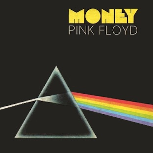

Pink Floyd — британская рок-группа, знаменитая своими продолжительными композициями и объединёнными в тематические сюиты песнями, звуковыми экспериментами, философскими текстами, дизайном обложек альбомов и грандиозными концертными шоу. Является одной из наиболее влиятельных и коммерчески успешных групп в истории мировой рок-музыки — в её активе более 250 млн проданных альбомов в мире, в том числе 75 млн — в США.
Неотъемлемой частью творчества Pink Floyd являются иллюстрации обложек альбомов. Автором дизайна большинства из них стал Сторм Торгерсон, основатель студии Hipgnosis, куда также входил дизайнер Обри Пауэллruen. Hipgnosis не участвовала в оформлении только четырёх студийных пластинок группы: The Piper at the Gates of Dawn, фото для которой сделал фотограф Вик Сайн, а обратная сторона была оформлена рисунком Сида Барретта; The Wall, для дизайна которой группа наняла Джеральда Скарфа; The Final Cut, дизайн которой создал Уотерс, и The Endless River.